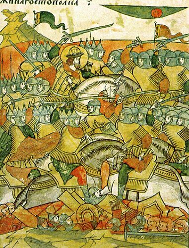
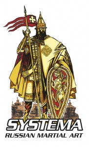
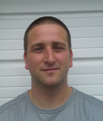

-

Systema is a Russian martial art which continues the traditional fighting styles of Russia dating back to the 10th Century.Historically, the people of Russia had to defend their homeland from a variety of invaders, all using their own distinct styles of fighting and weapons, as well as their own approach to warfare. Because of the vast size of the country, Russia has a wide range of terrains and climates, so those fighting had to be versatile and adaptable not only to the different styles and strategies of their attackers, but also to the wide variation in the natural environment.
-
Systema has roots in the Russian Orthodox faith: the belief that everything that happens, good or bad, has the ultimate purpose of creating the best possible conditions for each person to understand him or herself. Systema has another name “poznai sebia” or “Know Yourself”. Proper training in Systema carries the objective to put every participant into the best possible setting to realize as much about oneself as one is able to handle at any given moment.
An important aspect of systema is the focus on non-destruction and the promotion of health and well being. At first the idea of non-destruction in a martial art seems paradoxical and counter-intuitive. This is because many of us equate fighting with violence and aggression. However the path of violence and aggression is damaging not only to those we train with, but to ourselves as well. It also fosters an unhealthy environment of competition and a focus on "winning" instead of looking at ourselves and finding our own weaknesses and limitations.
-

The founders of Systema are Mikhail Ryabko and Vladimir Vasilev. Both are accomplished martial artists with many years of training and combat experience. They possess a unique talent for demonstrating and teaching the principles of systema both with words, and through contact.For more details about them, please visit the Vladimir Vasilev's school website, or Mihail Ryabko's school website.
-

Western New York Systema was founded in the summer of 2012 by Kevin Juliano.Before studying Systema, Kevin studied Chinese Kung-fu with at the Mandarin Kung Fu Society in the Buffalo, NY area and Taijiquan at the Rising Sun School of Tai Chi Ch'uan in Toronto, Canada. In 2004, the Taijiquan instructor Sifu McCaughey introduced Kevin to Systema through a series of cross-training seminars designed to approach Taiji boxing from a different perspective. Later, McCaughey introduced Kevin to Vladimir Vasiliev at the Systema Headquarters school north of Toronto. Kevin became a regular student at the Systema Headquarters. He was certified by Vladimir Vasiliev as an instructor in 2010.
In addition to teaching Systema, Kevin practices acupuncture and Chinese herbal medicine in the Buffalo, NY area where he runs Peaceful Water Health and Fitness.
Origin
Systema is a Russian martial art which continues the traditional fighting styles of Russia dating back to the 10th Century.
Historically, the people of Russia had to defend their homeland from a variety of invaders, all using their own distinct styles of fighting and weapons, as well as their own approach to warfare. Because of the vast size of the country, Russia has a wide range of terrains and climates, so those fighting had to be versatile and adaptable not only to the different styles and strategies of their attackers, but also to the wide variation in the natural environment.
Philosophy
Systema has roots in the Russian Orthodox faith: the belief that everything that happens, good or bad, has the ultimate purpose of creating the best possible conditions for each person to understand him or herself. Systema has another name “poznai sebia” or “Know Yourself”. Proper training in Systema carries the objective to put every participant into the best possible setting to realize as much about oneself as one is able to handle at any given moment.
An important aspect of systema is the focus on non-destruction and the promotion of health and well being. At first the idea of non-destruction in a martial art seems paradoxical and counter-intuitive. This is because many of us equate fighting with violence and aggression. However the path of violence and aggression is damaging not only to those we train with, but to ourselves as well. It also fosters an unhealthy environment of competition and a focus on "winning" instead of looking at ourselves and finding our own weaknesses and limitations.
Founders
The founders of Systema are Mikhail Ryabko and Vladimir Vasilev. Both are accomplished martial artists with many years of training and combat experience. They possess a unique talent for demonstrating and teaching the principles of systema both with words, and through contact.
For more details about them, please visit the Vladimir Vasilev's school website, or Mihail Ryabko's school website.
Our School
Western New York Systema was founded in the summer of 2012 by Kevin Juliano.
Before studying Systema, Kevin studied Chinese Kung-fu with at the Mandarin Kung Fu Society in the Buffalo, NY area and Taijiquan at the Rising Sun School of Tai Chi Ch'uan in Toronto, Canada. In 2004, the Taijiquan instructor Sifu McCaughey introduced Kevin to Systema through a series of cross-training seminars designed to approach Taiji boxing from a different perspective. Later, McCaughey introduced Kevin to Vladimir Vasiliev at the Systema Headquarters school north of Toronto. Kevin became a regular student at the Systema Headquarters. He was certified by Vladimir Vasiliev as an instructor in 2010.
In addition to teaching Systema, Kevin practices acupuncture and Chinese herbal medicine in the Buffalo, NY area where he runs Peaceful Water Health and Fitness.